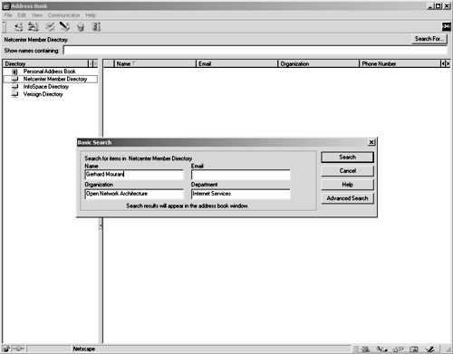

| Securing and Optimizing Linux: RedHat Edition -A Hands on Guide | ||
|---|---|---|
| Prev | Chapter 26. Linux OpenLDAP Server | Next |
To Search on LDAP directory server for entries, the ldapsearch utility searches through the backend database of LDAP directory for information you have requested. You can use the following command:
[root@deep] /# ldapsearch -b dn attrs
[root@deep] /# ldapsearch -b o=openna, c=com cn=europe*
|
cn=Europe Mourani, o=openna, c=com
cn=Europe Mourani
sn=Mourani
mail=emourani@old.com
description=Marketing relation
objectClass=person
|
Some possible uses of OpenLDAP software, for instance OpenLDAP can be used as:
Web Catalogue Server.
White Pages Server.
Certificate Server.
An Access Control Server.
Network Name Server.
If you have Netscape installed on a Linux workstation, or even another kind of operating system, you can use its Address Book features to access the LDAP Directory Server you have just installed on Linux and query your directory server for information like you do with the ldapsearch command tool on Linux.
If you are interested in doing that, follow the simple steps below:
Open Netscape Communicator
Go to Communicator menu
Open the Address Book
Go to File menu
Click on New Directory
Fill the boxes with your server information
Now all you have to do is to make some queries to your LDAP Directory Server on Linux, by using the box named to start your search, and clicking on the button to get the results.

The Netscape Address Book Client Program.